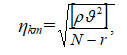
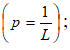
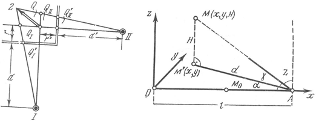
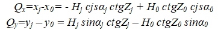

III bob.
Injenerlik inshootlarini cho’kishini va gorizontal cho’kish sabablarini o’rganish, ularni
kuzatish va tahlil qilish.
3.1 Nivelirni tekshirish va tuzatish
N3 niveliri va uni tekshirish. NZ niveliri ilgarigi NV-1 ning takomillashgani bo‘lib, quyma
va kontakt adilakli nivelir, ancha ixcham va qulay bo‘lganidan ko‘proq ishlatiladi. Nivelir
bo‘laklari 16-rasmda ko‘rsatilgan. Nivelir trubasi ichki fokuslanadigan, ob’ektiv va okulyar
linzalaridan tashqari, ob’ektivli tirsakda fokuslash linzasi ham bo‘lib, u ob’ektivli
tirsakdagi maxsus vint 10 orqali harakatqiladi. Nivelirda doiraviy va silindrik adilaklar
bor, doiraviy adilak 13 asbobning yuqori qismiga o‘rnatilgan, tag tomonida tuzatish vintlari
14 bo‘lib, adilak truba bilan birga aylanadi, shu adilak orqali truba taxminiy gorizontal
vaziyatga keltiriladi. Silindrik adilak 7 trubaning chap yon tomoniga o‘rnatilgan, uning
pufakchasining holati prizmalar sistemasi orqali ikki yarim palla ko‘rinishida truba ko‘rish
maydonida reykaning chap yonida reyka bilan birga ko‘rinadi
N3 niveliri: a-umumiy ko‘rinishi:
1-prujinali plastinka, 2-taglik, 3-elevatsion vint, 4-okulyar, 5-silindrik adilak
tuzatgich vintlari joylashgan qutisi, 6-truba korpusi, 7-adilak qutisi, 8-mushka, 9-obektiv,
10-fokuslash vinti (kremalera, 11-siquvchi vint, 12-qaratish vinti, 13-doiraviy adilak,
14-doiraviy adilak tuzatgich vinti, 15-ko‘targich vinti.
b - NZ nivelirining ko‘rish maydoni, sanoq 1144 mm.
-bu hol sanoq olishda adilak to‘g‘ri turganini bilishga imkon beradi.
Okulyarning o‘ng tomonida unga yaqin qilib taglikda elevatsion vint 3 o‘rnatilgan;
-bu silindrik adilakni vertikal tekislik bo‘yicha harakat qilishiga imkon beradi,
bu vint bilan pufakchalar yarim pallasi birlashtiriladi va adilak aniq gorizontal vaziyatga
keltiriladi. Elevatsion vintni burashda quyidagini eslash kerak. Agar pufakcha okulyar
tomonga qochsa, vint soat strelkasi yuradigan tomonning teskarisiga, ob’ektiv tomonga
qochsa, vint soat strelkasi yuradigan tomonga aylantiriladi. Asbob narsaga mushka 8 orqali
qaralib, vint 11 bilan mahkamlangach, qaratish vinti 12 vositasida aniq qaratiladi.
Okulyarning chap yonida silindrik adilak korpusida 5 adilakning tuzatish vintlari bo‘lib,
ular maxsus plastinka bilan berkitilgan, bu tuzatish vintlari orqali adilak tuzatiladi.
Rasmning o‘ng tomonida trubaning ko‘rish maydoni tasvirlangan bo‘lib,
unda adilakning gorizontal holatida reyka chanog‘i 1144 mm.
Nivelirning tuzilish sxemasi va
uning asosiy geometrik o‘qlari
JJ-asbobning aylanish o’qi; VV-asbobning kÿrish trubasining o’qi;
UU-silindrik adilak o’qi; UkUk-doiraviy adilak o’qi.
N3 Nivelirini tekshirish shartlari
1. Doiraviy adilak o‘qi nivelir aylanish o‘qiga parallel bo‘lishi kerak, ya’ni UkUk//JJ.
2. Iplar to‘rining gorizontal ipi nivelir aylanish o‘qiga perpendikulyar bo‘lishi kerak.
3. Trubaning ko‘rish o‘qi silindrik adilak o‘qiga parallel bo‘lishi kerak.
Trubaning ko‘rish maydoni va
reykadan sanoq 1257
Doiraviy adilakni tekshirish:
a- adilak pufakchasini 0 punktga keltirish, b- asbobning yuqori qismini 180 gradsga burash
O‘qlar gorizontal holatda
Nivelirlash reykalari: a, b, — ikki tomonli butun reyka; v - ikki tomonli buklanadigan reyka
(a) ko‘targich vintlarini bo‘shatib oyoqchalari surilib vintlar maxkamlanadi; (b) shtativ
oyoqchalari kiritiladi
Nivelirlash N – 3, N – 3K va shu aniqlikdagi boshqa nivelirlar hamda RN – 3 shashkali
nivelir reykalari yordamida bajariladi.
Nivelirlashda reykalar metall boshmoq, kostil yoki yerga qoqilgan yog‘och qoziqqa
o‘rnatiladi.
Stansiyaga nivelir o‘rnatilib ishchi holatiga keltiriladi, ko‘rish trubasi navbati
bilan orqadagi va oldindagi reykalarga qaratilib sanoqlar olinadi. Har bir sanoq olishdan
avval, agar silindrik adilakli nivelir olingan bo‘lsa adilak pufakchasi o‘rta holatga
elevatsion vint bilan keltiriladi.
Nivelir trubasining kattalashtirish koeffitsienti 35’ dan kam bo‘lmasa, nivelirlash
vizir nuri uzunligi 75 m bo‘lishi kerak. Agar nivelir to‘rida tebranish yo‘q bo‘lsa, vizir
nuri 100 m gacha uzaytirishga ruxsat etiladi.
Nivelirdan reykagacha bo‘lgan masofa tros, lenta yoki ruletka bilan o‘lchanadi.
Nivelirdan reykagacha bo‘lgan masofaning tengsizligi 2 m, seksiyada uning yig‘ilganligi 5 m
dan oshmasligi kerak, vizir nurinig yer yuzasidan balandligi 0,3 m dan kam bo‘lmasligi
kerak. Kuzatish vaqtida nivelir quyosh nuridan zont yordamida ximoya qilinadi. Reykalar
taglikka (boshmakga) adilak bo‘yicha qo‘yiladi. Nivelir nisbiy balandliklar farqi 3 mm gacha
bo‘lishi mumkin.
Xar bir reykaning qora tomonidan o‘rta ip bo‘yicha olingan sanoq farqi 3 mm dan
oshmasligi kerak. Reykaning qora va qizil tomoni bo‘yicha hisoblangan nisbiy balandliklar
orasidagi farqi 3 mm dan oshmasligi kerak. Farq ushbu kuttalikdan oshib ketsa bekatdagi
kuzatish nivelir balandligini ozgina o‘zgartirib qaytadan nivelirlash ishlari bajariladi.
Seksiyada nivelirlash ishlari bajarilganda keyin to‘g‘ri va teskari yo‘l bo‘yicha
olingan nisbiy balandliklar qiymati bir biri bilan taqqoslanadi bu qiymatlar ortasidagi farq
fh chek=±√L dan oshmasligi kerak. Agar chekli xatodan katta bo‘lmasa unda nivelish to‘g‘ri
bajarilgan bo‘ladi.
3.2 Injenerlik inshootlarini cho’kishini kuzatish
Kotlovan tagi bo‘rtishini o‘rganish. Poydevor siljishini kuzatish, qurilish kotlovanidan
tabiiy bosim (tuproq qatlami) olib tashlangandan keyin, uning tag qismi bo‘rtishini
o‘rganishdan boshlanadi. Chuqur kotlovanlar qazilganda tog‘-jinslariga bo‘lgan tabiiy bosim
o‘zgaradi va buning natijasida kotlovan tag qismida ko‘tarilish kuzatiladi.
Kotlovan tagi bo‘rtishini kuzatishdan maqsad turli xil nuqtalardagi ko‘tarilishni
ta’riflovchi ma’lumotlar yig‘ishdir. Bu ma’lumotlar poydevorning keyingi cho‘kishi haqida
kengroq o‘rganishga imkon beradi. Katta gidrotexnik inshootlar qurilishida 20-50 m
chuqurlikda kotlovanlar qaziladi. Bunday kotlovanlar tag qismining burtish qiymati bir necha
santimetrdan 20-30 sm gacha borishi mumkin.
Qurilish maydonidagi kotlovanlarning ko‘tarilish qiymatini o‘lchash uchun avvaldan
belgilangan joyda quduq qaziladi va unga maxsus konstruksiyadagi marka o‘rnatiladi. Quduq
chuqurligi quyidagicha hisoblanadi:
Hk = H1 - (H2 - 0,8) .
Bu yerda H1 – quduqning ustki qismi otmetkasi;
H2 – katlovan tagining otmetkasi.
Kuzatish markasi quduq orqali tushirilgandan keyin invar ruletka yordamida yaqinroq
joylashgan reper otmetkasi unga uzatiladi. Nisbiy balandlikni uzatish aniqligi barcha
tuzatmalarni kiritgandan keyin 1 mm o‘rta kvadratik xatolik bilan xarakaterlanadi.
Quduqlar geodezik asos punktlari bilan geodezik bog‘lanadi va koordinatalari aniqlanadi.
Kotlovanni qazishda oldingi va keyingi holatlarda markaning aniqlangan koordinatalari
farqi bo‘rtish qiymatini ko‘rsatadi. Ko‘tarilish kotlovanning markazida kattaroq bo‘lib,
uning chekka qismlarida kichikroq bo‘ladi.
Cho‘kish voronkalarini o‘lchamini aniqlash. Inshootlar qurilishi jarayonida cho‘kish
nafaqat ularning pastki qismida, balki ular atrofida ham sodir bo‘ladi. Bu xodisa yer
qatlamini unga qurilgan barcha inshootlar bilan birga cho‘kishiga olib keladi. Bu yerdan
cho‘kish voronkasini chegaralarini aniqlash, bino atrofida yuz berishi mumkin bo‘lgan turli
hodisalarning olidini olishga imkon beradi.
Muhim hisoblangan cho‘kish voronkalari yer osti inshootlarini, ayniqsa katta tunellar,
plotinalar va boshqa gidrotexnik inshootlar qurilishida yuzaga keladi.
Cho‘kish voronkalari o‘lchamlarini aniqlashda va ularning keyingi o‘sishini
xarakterlash uchun qurilish ob’ektiga yaqin joylashgan bino poydevorlariga nivelir markalari
o‘rnatiladi. Markalar balandligini aniqlash bir nechta bosqichda nivelirlash asosi punktiga
nisbatan bajariladi. Birinchi va oxirgi bosqich II sinf nivelirlash orqali bajarilishi
maqsadga muvofiq. Birinchi bosqich yer ishlari boshlanishidan oldin amalga oshirilishi
kerak. Nivelirlash ishlaridan tashqari yer osti suvining sathini, jinslarning namligi va
boshqa faktorlarini kuzatib borish zarur.
Tik deformatsiyani o‘lchash usullari. Deformatsiyani aniqlash uchun joylashtiriladigan
belgilar holati qabul qilingan o‘lchash usuliga bog‘liq. Inshootlar va ular poydevorlarining
cho‘kishini kuzatish uchun quyidagi geodezik usullardan foydalaniladi.
a) qisqa vizir chiziqli (25 m gacha) geometrik nivelirlash;
b) qisqa vizir chiziqli (100 m gacha) trigonometrik nivelirlash;
v) gidrostatik nivelirlash;
g) fotogrammetrik va stereofotogrammetrik plan olish.
Noyob inshootlarni kuzatishda mikronivelirlash usuli ham qo‘llanilishi mumkin.
Cho‘kishning absolyut qiymatini aniqlash uchun boshlang‘ich deb qabul qilingan reperda
nivelirlash amalga oshiriladi. Nisbiy cho‘kishlar inshootning nuqtalari orasidagi
o‘lchashlar farqidan olinadi.
Cho‘kishni kuzatishda eng ko‘p qo‘llaniladigan usul yuqori aniqlikdagi geometrik
nivelirlash hisoblanadi. Nivelirlash cho‘kish markalari deb qabul qilingan belgilar bo‘ylab
amalga oshiriladi. Bu belgilar inshoot poydevoriga o‘rnatilgan bo‘lib, ular inshoot bilan
birga xarakatlanadi, demak ularni kuzatish orqali inshootning alohida qismlari cho‘kishini
aniqlashimiz mumkin.
Cho‘kish markalari kuzatilayotgan inshootdan ma’lum masofada, cho‘kish voronkasidan
chekkada joylashgan reperlar tarmog‘iga nisbatan aniqlanadi. Bu reperlarning balandlik
holatlari barqarorligi cho‘kishni kuzatish davomida saqlanib qolishi kerak.
Belgilarni joylashtirish loyihasi. Inshootlarning alohida nuqtalarini tik va gorizontal
siljishini aniqlashda cho‘kish markalari va geodezik asos belgilarini joylashtirish asosiy
ishlardan bittasi hisoblanadi. Siljishni aniqlash sifati va batafsilligi belgilarning
to‘g‘ri joylashtirilganligi va soniga bog‘liq.
Inshootlarga kuzatish belgilarini joylashtirish loyihasi poydevor konstruksiyasi,
gidrologik va geologik sharoitlarni hisobga olgan holda tuziladi. Cho‘kish markalari iloji
boricha bir xil sathda, binolar burchagiga joylashtirilishiga xarakat qilinadi.
G‘isht devorli yashash va jamoat binolari uchun cho‘kish markalari poydevor perimetri
bo‘ylab 10-15 m oraliqda joylashtiriladi.
Sanoat inshootlari va karkasdan bo‘lgan yashash va jamoat binolari uchun cho‘kish
markalari ustunlarga, bino perimetri bo‘ylab joylashtiriladi.
Aylana shaklidagi inshootlar uchun to‘rttadan kam bo‘lmagan cho‘kish markalari perimetr
bo‘ylab o‘rnatiladi.
Markalar joylashishi sxemasi, bino va inshootlar poydevorlari planida loyihalanadi. Har bir
marka nomerlanadi.
Cho‘kish markalari turlari. Oddiy ko‘rinishdagi marka 15 sm uzunlikdagi armatura yoki
temir bo‘lagidan iboratriangulyatsiya
Yuqori aniqlikdagi kuzatishlar uchun esa turli xildagi shkalali markalar qo‘llaniladi.
Bu turdagi markalar reyka sifatida foydalaniladi va nivelirlash aniqligini oshiradi.
Boshlang‘ich nivelirlash asosi. Qo‘yilgan talab va kuzatish aniqligiga bog‘liq bo‘lgan
holda quyidagi reperlar boshlang‘ich (asos) bo‘lib xizmat qilishi mumkin:
chuqurlikdagi fundamental reperlar-yerning mustahkam, turg‘in qatlamiga o‘rnatiladi;
yer grunt reperlari-yerning muzlaydigan qatlamidan pastda o‘rnatiladi;
devoriy belgilar-poydevor cho‘kishi qariyib tugagan bino va inshootlar devoriga
o‘rnatiladi.
Yer va devoriy reperlar o‘rnatiladigan bino va inshootlar ta’sir maydonchasidan
tashqarida joylashgan bo‘lishi kerak. Sanoat inshootlari uchun yer reperlarining inshootdan
uzoqlashuvi 70-80 m dan kichik bo‘lmasligi kerak. Gidrotexnik inshootlar qurilishida yer
reperlari cho‘kish zonasidan tashqarida joylashishi kerak. Odatda ular daryoning ikkala
qirg‘og‘iga 0,5-0,1 km masofada plotina stvoridan pastda joylashtiriladi. Yer ishchi
reperlari imkoniyat boricha bino va inshootlar yaqiniga joylashtiriladi. Ayrim hollarda
reperlar plotinalarning ham pastiga, ham ustki qismiga o‘rnatiladi. Bunday reperlarni
sistematik ravishda nivelirlash, suv omboridagi suvning ko‘payib borishi mobaynida
plotinaning mustahkamligi haqida bilib borishga imkon beradi.
Chuqurlikdagi reperlarga qo‘yiladigan asosiy talab, ularning cho‘kishini kuzatish
davridagi mustahkamligi va barqarorligi hisoblanadi. Ishchi reperlarga bunday talab
qo‘yilmaydi. Ular o‘zlarining mustahkamligini faqatgina ma’lum o‘lchash siklidagina saqlashi
talab etiladi. Cho‘kishni II va III sinf nivelirlash orqali o‘lchashda boshlang‘ich asos
sifatida yer reperlari, hamda bino va inshootlar devorlariga o‘rnatilgan reperlarni
qo‘llashga ruxsat beriladi. Yer reperlarining soni uchtadan kam bo‘lmasligi, devoriy
belgilar esa to‘rtadan kam bo‘lmasligi kerak. Boshlang‘ich (asos) reperlar o‘rnatilgandan
keyin ularning birortasiga yaqinroqda joylashgan geodezik balandlik tarmog‘i nuqtasidan
otmetka uzatiladi.
Reperlar turlari. rasmda yer reperining eng ko‘p tarqalgan turi ko‘rsatilgan
Quvursimon yer reperlari sferik golovkadan iborat bo‘lib, 50-80 mm diametrdagi trubaga
mahkamlangan. Montaj vaqtida reper trubasi tayyorlangan quduqqa tushiriladi va betonlanadi.
Joy sharoitiga mos ravishda turli xildagi reperlar qo‘llanilishi mumkin.
Invar strunali reper, ikki strunali reper, bimetal reperlar shular jumlasidandir.
3.3 Injenerlik inshootlarini cho’kishini va siljishini aniqlashda bajariladigan nivelirlash
ishlari.
Geometrik nivelirlash usuli. Ko‘pgina bir xil andazali inshootlar poydevorlari cho‘kishini
kuzatish aniqligi I yoki II sinf nivelirlash usuli yordamida ta’minlanadi.
Faqatgina ayrim hollardagina cho‘kishni aniqlashda yuqori aniqlikda nivelirlashning
maxsus usullari qo‘llaniladi.
Nivelirlashning I sinf uslubida poydevor cho‘kishini aniqlash asbobning ikki
gorizontida, to‘g‘ri va teskari yo‘nalishda, yuqori aniqlikdagi nivelirlar H-05 va N1 002
yordamida bajariladi. Nivelirlashda invarli reyka qo‘llaniladi.
Nivelirlash yo‘li boshlang‘ich (asos) reperdan boshlanib shu reperda yoki boshqa reperda
tugaydi. Vizirlash nuri uzunligi 25 m dan oshmasligi, uning yer yuzasidan yoki poldan
balandligi 0,8 m dan kichik bo‘lmasligi kerak. Ayrim hollarda, vizirlash nuri uzunligi 15 m
dan oshmaganda nurning balandligi 0,5 m bo‘lishiga yo‘l qo‘yiladi.
Nivelirlash tashqi muhit qulay va reyka shtrixlari tasviri yetarlicha aniq ko‘rinadigan
sharoitda amalga oshiriladi.
Inshoot ichkarisida joylashgan markalarga otmetka uzatish deraza va eshik tirqishlari
orqali uzatiladi. Issiq va sovuq havo oralig‘ida nivelir o‘rnatish tavsiya etilmaydi.
Nivelirning i burchak qiymati 20” dan katta bo‘lmasligi, stansiyalardagi yelka uzunligi
farqi esa 0,4 m dan oshmasligi kerak.
Yopiq nivelirlash yo‘lidagi yelka tengsizliklari yig‘indisi 2 m gacha bo‘lishiga yo‘l
qo‘yiladi. Ikkita asbob gorizontidan olingan nisbiy balandliklar farqi 0,8 mm dan oshmasligi
kerak.
Yuqori aniqlikda nivelirlashda stansiyada nisbiy balandlikni o‘lchash xatoligi 0,1 mm ni
tashkil etadi, nivelir yo‘li yoki poligonlar bog‘lanmaslik cheki, quyidagi ifoda yordamida
hisoblangan qiymatdan oshmasligi kerak.
bu yerda n- stansiyalar soni.
Reperlar otmetkasini fasllardagi harorat o‘zgarishi sezilarli darajada o‘zgartiradi.
Shuning uchun fundamental reperlarning kuzatilayotgan poydevor bilan bir xil haroratda
bo‘lishiga xarakat qilinadi.
Ko‘pgina sanoat inshootlarini kuzatishda nivelirlashning II sinf usulubi qo‘llaniladi.
U H-1, H-2 va Ni 007 turdagi nivelirlar yordamida bajariladi.
Nivelirlash bitta asbob gorizontida, to‘g‘ri va teskari yo‘nalishda amalga oshiriladi.
Vizirlash nuri balandligi yer yuzasi yoki poydevordan 0,5 m dan kichik bo‘lmasligi kerak.
Nivelirdan reykalargacha bo‘lgan masofalar farqi 1 m dan katta bo‘lmasligi, yopiq yo‘l uchun
ularning yig‘indisi 3-4 m dan katta bo‘lmasligi kerak. Vizir chizig‘i uzunligi 30 m dan
oshmasligi kerak.
Yopiq poligondagi yoki I – sinf punktlari orasidagi yo‘l qo‘yarli bog‘lanmaslik
quyidagicha hisoblanadi:
bu yerda n- stansiyalar soni.
Yer inshootlari, hamda kuchli siqiladigan tuproqlarda barpo qilinadigan inshootlar
cho‘kishini kuzatish III-sinf nivelirlash usulida bajarilishi mumkin. Bunda H3 va Ni 007
turdagi nivelirlar va ikki tomonlama santimetr bo‘lakli reyka qo‘llaniladi. Nivelirlash
ikkita asbob gorizontida, bitta yo‘nalishda bajariladi.
Vizirlash nuri uzunligi 40 m dan oshmasligi kerak. Vizir chizig‘i balandligi 0,3 m dan
kichik bo‘lmasligi, nivelirdan reykalargacha bo‘lgan masofalar farqi 2 m dan oshmasligi,
ularning nivelirlash yo‘lidagi yig‘indisi esa 5 m dan oshmasligi kerak. Nivelir yo‘lining
bog‘lanmaslik cheki quyidagi ifoda yordamida hisoblanadi:
bu yerda n- stansiyalar soni.
O‘lchash natijalarini qayta ishlash odatdagiday, nivelirlash aniqligini baholash
natijalariga va tenglashtirishdan olingan tuzatmalarga asosan amalga oshiriladi.
Stansiyadagi nivelirlashning o‘rta kvadratik xatoligi quyidagicha hisoblanadi:
bu yerda d-stansiyadagi ikkilangan o‘lchashlar farqi;
n- nivelir tarmog‘idagi teng aniqlikdagi farqlarning soni.
Yopiq nivelirlash poligoni yoki yo‘llarining bitta stansiyasida mhct va bir kilometrda ηkm
nisbiy balandlik xatoligi quyidagicha hisoblanadi:
bu yerda fh- poligondagi yoki yo‘ldagi bog‘lanmaslik;
n- nivelirlash stansiyalari soni; N-poligonlar yoki yo‘llar soni;
[L]-poligonlar yoki yo‘llar uzunliklari yig‘indisi.
Tenglashtirish natijalariga asosan 1 km yo‘lning o‘rta kvadratik xatoligi:

bu yerda N- tarmoqdagi barcha tomonlar soni;
r-tugun nuqtalar soni;
r-yo‘l vazni  ;
v-tenglashtirishdan olinadigan tuzatma.
O‘lchash aniqligi tenglashtirilgandan keyin cho‘kish markalarining otmetkalari H
hisoblanadi va cho‘kish bo‘yicha jadval tuziladi. Bunda quyidagilar aniqlanadi:
Oxirgi ikkita kuzatish sikli ( j – 1 va j ) orasidagi cho‘kish qiymati S
Dastlabki kuzatuvdan boshlab cho‘kishlar yig‘indisi
poydevor nishabligi
bu yerda l1,2 - poydevordagi 1 va 2 nuqtalar orasidagi masofa;
poydevor o‘qi bo‘ylab simmetrik egilish qiymati
va nisbiy egilish
bu yerda S1 va S3 poydevor o‘qidagi chekka markalar cho‘kishi;
S3 – o‘rtadagi markalarning cho‘kishi; l1,3 – chekka markalar 1 va 3
orasidagi masofa;
Cho‘kishning o‘rtacha oylik yoki o‘rtacha yillik cho‘kish tezligi (N marka uchun)
bu yerda t – oylarda yoki yillarda ifodalangan vaqti;
SN – shu vaqt mobaynidagi cho‘kishlar yig‘indisi.
Barcha inshoot uchun o‘rtacha cho‘kish tezligi
bu yerda r – kuzatilayotgan markalar soni.
Cho‘kish jarayonini aniq ko‘rsatish uchun bo‘ylama va ko‘ndalang o‘qlar bo‘ylab profil
tuziladi (57 – rasm) poydevor markalarining birgalikdagi grafiklari (58 – rasm), xarakat va
yer osti suvlarining o‘zgarish grafiklari tuziladi.
Cho‘kish va poydevorlarda yoriqlar paydo bo‘lishini aniq tasavvur qilish uchun poydevor
va yer osti suvlarining haroratini kuzatish natijalariga ega bo‘lish talab etiladi.
3.4 Geodezik o’lchash ishlarining davriyligini aniqlash
Inshootlar og‘ishi (kren) qo‘yilgan texnik talab va kuzatish sharoitiga bog‘liq holda turli
xil usullarda aniqlanishi mumkin. Bular mexanik shovunlar va optikaviy markazlashtirgichlar
yordamida, geodezik usullar va hokazo.
Og‘ishni kuzatish qurilayotgan va qurilib bitgan inshootlarda xam amalga oshiriladi.
Poydevor nishabligi, hamda bino va inshootlar og‘ishini kuzatishda o‘lchash xatoligi
quyidagidan oshmasligi kerak:
Agreget va mashinalar osti poydevorlari uchun ..................... 0,00001L;
Sanoat va fuqaro binolari devorlari uchun …....................... 0.0001H;
Tutun chiqaruvchi quvurlar, minora va machtalar uchun ........... 0,0005H.
Bu yerda L va H poydevor uzunligi va inshoot balandligi.
Shovunlarni qo‘llash. Ayrim hollarda og‘ishni aniqlash uchun shovunlar qo‘llaniladi.
Shovun konstruksiyaning yuqori nuqtasiga osiladi va shkalali sanoq moslamasi yordamida uning
tik o‘qdan og‘ishi o‘lchanadi. Bu usulda asosiy xato manbai shovun ipining tebranishi
hisoblanadi. Qulay sharoitda inshoot balandligi 15 m gacha bo‘lganda bu usul talab qilingan
aniqlikni ta’minlashi mumkin.
Tik proeksiyalovchi asboblarni qo‘llash. Inshoot va konstruksiyalar og‘ishini aniqlash
uchun turli xil optikaviy asboblar, kompensatorli zenit-asboblar qo‘llaniladi. Tik
proeksiyalovchi optikaviy asboblar qulay sharoitlarda, inshoot balandligi 100 m gacha
bo‘lganda og‘ishni 1 mm atrofidagi xatolikda aniqlashga imkon beradi.
O‘lchash chegarasini kengaytirish va aniqligini oshirish maqsadida zenit-asboblarda nur
sochish manbai sifatida lazerlar qo‘llanilmoqda. Lazer nuri tik holatga aniq adilak yoki
nivelir kompensatori yordamida keltiriladi.
Ko‘pchilik hollarda og‘ishni aniqlash teodolit qo‘llash yordamida amalga oshiriladi.
Koordinatalar usuli. Tekshirilayotgan inshoot atrofiga, uning balandligidan 2 – 3 marta
katta bo‘lgan masofada yopiq poligonometriya yo‘li barpo etiladi va doimiy mahkamlangan 3 –
4 punkt koordinatasi topiladi. Bu nuqtalardan inshootning yuqori qismidagi yaxshi
ko‘rinadigan nuqtaning koordinatalari aniqlanadi.
Joriy va boshlang‘ich bosqich (sikl) kuzatishlari natijalariga binoan hisoblangan
koordinatalar farqidan og‘ish (kren) qiymati topiladi,
Og‘ishning to‘liq qiymati va uning yo‘nalishi
ifoda yordamida hisoblanadi.
Tik proeksiyalash usuli. Inshootning ikkita, o‘zaro perpendikulyar o‘qlarida doimiy
punktlar I va II mahkamlanadi (68-rasm). Bu punktlarga teodolit o‘rnatilib, ular gorizontal
holatga keltiriladi va inshootning bironta yuqori nuqtasi doiraning ikki holatida asosga
(poydevorga) proeksiyalanadi.

Bino og‘ishining to‘liq qiymati Q ni aniqlash uchun I va II nuqtalardan bir vaqtda
kuzatishni amalga oshirish kerak, ikkinchidan og‘ishni tashkil qiluvchi qiymatlari
QI va QII
dan haqiqiy qiymatlari QI va QII ga o‘tish kerak 68-rasmdan
Yuqorida keltirilgan ifoda yordamida og‘ishning to‘liq qiymati Q hisoblanadi.
Gorizontal burchaklar usuli. Poydevor qismi to‘silgan baland inshootlar og‘ishini
kuzatishda
gorizontal burchaklar usulini qo‘llash qulay bo‘ladi. Uning mohiyati I va II nuqtalarga
teodolit o‘rnatilib asos yo‘nalishlar IN va IIM hamda kuzatilayotgan inshootning eng yuqori
nuqtasiga bo‘lgan yo‘nalishlar orasidagi burchaklarni o‘lchashdan iboratriangulyatsiya
Bir necha bosqichlarda (sikllar) o‘lchangan bu burchaklar farqidan og‘ishni tashkil etuvchi
QI va QII qiymatlar
hamda to‘liq og‘ish iymati Q hisoblanadi,

Og‘ishning burchak qiymati, og‘ish qiymati Q ning inshoot balandligi N ga nisbati orqali
topiladi:

Bu usulda og‘ishni o‘lchash aniqligi asosan 1 va 2 burchaklar o‘lchash aniqligiga bog‘liq:
Agarda l = 200 m, mb= 1//bo‘lsa, mQ= 2 mm bo‘ladi.
Gorizontal va vertikal burchaklar o‘lchash usuli. Bu usulda og‘ishni aniqlash uchun A
asos punktdan teodolit yordamida inshoot markazi va uning eng yuqori nuqtasiga bo‘lgan
yo‘nalishlar orasidagi gorizontal va vertikal (zenit) burchak o‘lchanadi.
Koordinata boshi sifatida inshoot markazi ( O nuqta) qabul qilinadi va abssissa o‘qi OA
chiziq bo‘ylab yo‘naltiriladi.
Og‘ishni tashkil etuvchi qiymatlar (boshlang‘ich va joriy sikllar oralig‘ida)
quyidagicha hisoblanadi:

Yuqori aniqlikda nivelirlash usuli. Minora, elevator, tutun chiqaruvchi quvurlar va shu kabi
inshootlarning og‘ishi ularning poydevorlari cho‘kishini o‘lchash natijalariga asosan
aniqlanishi mumkin. Buning uchun kuzatilayotgan inshoot poydevoriga joylashtirilgan cho‘kish
markalari bo‘ylab yuqori aniqlikdagi
nivelirlash ishlari bajariladi, ularning cho‘kish qiymati aniqlanadi va ularning farqi S ga
binoan poydevor nishabligi hisoblanadi. 1.2. o‘q uchun
N balandlikdagi inshootlar og‘ishi
ifoda yordamida hisoblanadi.
Bu usulda og‘ishni (krenni) aniqlash xatoligi:
ifoda orqali hisoblanadi.
Yoriqlarni kuzatish. Inshootlar poydevorlari deformatsiyalari faqatgina ularning
og‘ishiga sababchi bo‘lmaydi, balki ularda yoriqlar paydo bo‘lishiga ham olib keladi.
Ayniqsa bunday yoriqlar gidrotexnik inshootlarda sodir bo‘lishi xavfli.
Yoriqlar rivojlanish hususiyatiga qarab aktiv va aktivmas turlarga bo‘linadi. Agarda
yorilish jarayoni davom etib borsa aktiv, aksincha yorilish davom etmasa aktivmas yorilish
hisoblanadi. Yorilishni aniqlash uchun inshoot devoriga gips, alibastr yoki oynadan yasalgan
maxsus mayaklar joylashtiriladi. Agarda yorilish aktiv bo‘lsa, ma’lum vaqtdan keyin mayakda
darz ketishi sodir bo‘ladi. Yoriq o‘lchamini lineyka yordamida aniqlash mumkin. Imkoniyat
bo‘lsa yoriqlar suratga tushiriladi.
О‘pirilishni kuzatish
O‘pirilish yer massasining og‘irlik kuchi ta’sirida pastga qiyalik bo‘ylab xarakatlanishni
ifodalovchi fizikaviy geologik hodisa hisoblanadi. O‘pirilishlar har xil shaklda, kam
sezilarli xarakatlardan xalokatli ko‘chishlargacha sodir bo‘lishi mumkin.
O‘pirilishlar asosan yer osti va ustki suvlar ta’sirida tuproq yopishqoqligining
o‘zgarishi natijasida vujudga keladi.
Ko‘chishlarni kuzatishning ko‘pgina usullari mavjud bo‘lab, bularning ko‘pchiligi
geodezik o‘lchash usullarini qo‘llashga asoslangan.
Geodezik usullarda kuzatish, o‘pirilish bo‘lmaydigan joylarga mahkamlangan geodezik
belgilarga nisbatan bajarilishiga imkon beradi.
Ko‘chishni geodezik kuzatish quyidagi usullarda bajariladi:
1) berilgan chiziq yoki qabul qilingan stvorga nisbatan ko‘chishni aniqlash uchun o‘q
usullar;
2) planli usullar (gorizontal tekislikda X va U o‘qlarga asosan);
3) balandlik usullari (N o‘qlari bo‘yicha);
4) fazoviy usullar (X,U,N o‘qlari bo‘ylab).
Agarda nuqtaning ko‘chish yo‘nalishi yetarlicha aniqlikda ma’lum bo‘lsa, o‘q usullar
qo‘llaniladi.
O‘q usullarga quyidagilar kiradi:
1) o‘rnatilgan belgilar orasidagi masofani chiziqli o‘lchashlar;
2) ko‘chish nuqtalarini chiziqqa nisbatan stvor o‘lchashlar;
3) yo‘nalishlar usuli.
Planli usullar quyidagilardan iborat:
1) asos va ko‘chish nuqtalar orasidagi burchak va masofalarni to‘g‘ri va teskari chiziq
yoki burchak kesishtirish usulida o‘lchash;
2) poligonometrik yo‘llar o‘tkazish (ko‘chish nuqtalari bo‘ylab);
3) qutbiy koordinatalar usuli.
Balandlik usullari geometrik va trigonometrik nivelirlash yo‘llarini o‘tkazishdan
iboratriangulyatsiya
Odatda ko‘chishlarni kuzatish, ularning aktivligiga bog‘liq holda o‘rtacha yiliga
bir-ikki marta bajariladi.
O‘pirilishni kuzatish bilan bir vaqtda, boshlang‘ich asos punktlar va reperlar
o‘zgarmasligi ham nazorat qilib boriladi.
Sistematik kuzatishlar natijasida gorizontal va vertikal ko‘chishlarning qiymati,
yo‘nalishi va tezligi hisoblanadi.
3.5 Triangulyatsiya loyihasining sifatini baholash
Triangulyatsiya (lot. triangulum uchburchak) — geodezik tayanch shoxobcha punktlari
planli oʻrnini uchburchaklar tizimi yordamida aniqlash usuli. Boshlangʻich deb ataluvchi
triangulyatsiya punktlaridan birining koordinatalari va boshlangʻich oriyentirlash tomoni
(bazis) ning azimuta astronomik kuzatishlar orqali aniklanadi. ABC uchburchakning AV tomoni
(rayem, a) va barcha ichki burchaklari maʼlum boʻlsa, qolgan tomonlari uzunligini sinuslar
teoremasiga asosan hisoblab chiqariladi. BCD uchburchakning CD va BD tomonlari esa VS tomon
va ichki burchaklar kiymatlaridan topiladi va h. k. Uchburchaklar tizimi katorlar yoki yalpi
uchburchak( lar tarmogʻi koʻrinishida quriladi (rayem, b).
Davlat triangulyatsiya tarmogʻi burchak va masofa oʻlchash anikligi, uchburchak
tomonlarining uzunligi va shoxobchalarni xreil qilish tartibi boʻyicha bir-biridan farq
qiladigan 1, 2, 3 va 4sinflarga boʻlinadi. triangulyatsiya qurish umumiylikdan xususiylikka,
katta uchburchaklardan kichiklariga oʻtish prinsipiga asoslanadi. Davlat triangulyatsiya
tarmogʻining yuqori aniklikka ega boʻlgan 1sinfining asosiy vazifasi quyi sinflardagi
triangulyatsiya tarmoklarini rivojlantirish va ular punktlari koordinatalarini yagona
tizimda hisoblashni taʼminlashdir. 1sinf triangulyatsiya shoxobchalari tomonlari 20– 25 km
li qator uchburchaklar va bu tomonlar taxminan meridianlar hamda parallellar boʻylab
yoʻnalgan va 800–
1000 km perimetrli poligon koʻrinishida quriladi. Davlat triangulyatsiya tarmogʻining 2va
quyi sinflarini rivojlantirishdan maqsad, keyingi bosqichdagi geodezik va topografik ishlar
uchun butun davlat hududida geodezik punktlar tarmogʻini zarur zichlikda taʼminlashdan
iboratriangulyatsiya 2sinf triangulyatsiyada tomonlari 10–20 km li uchburchaklardan va bu
tomonlar 1sinf poligonini qoplaydigan shoxobchalar koʻrinishida quriladi. 1 va 2sinf
triangulyatsiya shoxobchalari asosida 3 va 4sinf punktlari aniqdanadi.
Triangulyatsiyaning burchaklari teodolit bilan, uchburchakning bazis tomonining
uzunligi uzoklikni oʻlchagich yoki uzunlikni oʻlchovchi sim bilan oʻlchanadi.
Davlat triangulyatsiyasi 1, 2, 3 va 4sinflari punktlarining umumiy zichligi har 50 km²
ga kamida bitta punktni tashkil qiladi. Oʻzbekiston Respublikasi hududida qozirda 1942 yilda
qabul qilingan geodezik koordinatalar tizimi (CK42) amal qiladi.
Ayni paytda Oʻzbekistonda Davlat Yer yoʻldoshi geodezik tarmoqlari (DEYGT) tarkibi
belgilangan boʻlib, ularni rivojlantirish umumdan ayrimga oʻtish prinsipiga asoslanadi. Yer
yoʻldoshlari radionavigatsiya tizimlari NAVSTAR (AQSH) va GLONASS (Rossiya) hamda kosmik
geodeziyaning boshqa usullaridan foydalanib quriladigan DEYGT oʻz ichiga quyidagilarni
oladi: referens geodezik punktlar tizimi (RGP); 0sinf Yer yoʻldoshi geodezik tarmogʻi
(YEYGT0); 1sinf Yer yoʻldoshi geodezik tarmogʻi (YEYGT1). DEYGT punktlarining oʻrni
koordinatalarning ikki tizimida — umumer va referens tizimlarida anikdanadi. Har ikkala
tizimlarning orasida biridan ikkinchisiga oʻtish parametrlari orqali aloqa bogʻlanadi.
Triangulyatsiya Yerning shakli va oʻlchamlarini aniqlashda, Yer qatlamining gorizontal
harakatini oʻrganishda, katta ilmiy va amaliy ahamiyatga ega, topografik-geodezik ishlar
uchun geodezik asos vazifasini oʻtaydi.
Triangulyatsiya-joydagi uchburchakliklar sistеmasining qatori bo`lib, burchak uchlari
tayanch punktlar bo`ladi. Punktlar shunday o`rnatiladiki, har nuqtadan kamida uch qo`shni
nuqta ko`rinadi va uchburchaklik tomonlarining uzunliklari bir-biridan katta farq qilmaydi.
3.6 Inshoot siljishini o’lchash davriyligi
Bino va inshootlar siljishi chiziqli-burchaklar tuzish yo‘li bilan ham aniqlanishi mumkin.
Bunda asosan yo‘nalishlar, triangulyatsiya, poligonometriya hamda, qo‘shma usullarni
qo‘llash mumkin.
Yo‘nalishlar usuli. Bu usul asosan stvor yasash mumkin bo‘lmagan hollarda va
kuzatilayotgan nuqtalar soni kam bo‘lganda (3 – 5 nuqta) qo‘llaniladi. Siljishni
yo‘nalishlar usulida o‘lchash uchun kamida uchta I, II, III asos nuqtalar bo‘lishi kerak.
Shu balan birga bu punktlarning bittasi siljish yo‘nalishiga perpendikulyar holatda
joylashgan bo‘lishi talab etiladi.
Kuzatilayotgan nuqtaning siljish qiymati q masofa va orientirlash yo‘nalishining
o‘zgarishiga binoan aniqlanadi:
bu yerda l - asos punkt bilan kuzatilayotgan nuqta orasidagi masofa;
o‘lchash bosqichlari (sikllari) oralig‘idagi kuzatilayotgan nuqtaga bo‘lgan
yo‘nalishning o‘zgarishi.
Har bir kuzatish bosqichida asos punktlar mustahkamligi tekshirilib turiladi. Hamma
bosqichda orientirlash yo‘nalishlari I01, I02, I03... bir
xil bo‘lishi kerak.
Orientirlash yo‘nalishlari bir nechta priyomda T1 yoki T2 teodolitlarida o‘lchanadi.
Triangulyatsiya usuli. Tog‘li joylarda inshoot nuqtalarining gorizontal siljishini
kuzatish triangulyatsiya usulida amalga oshiriladi.
Inshootning kuzatilayotgan nuqtalari turli xil balandliklarda joylashishi mumkin. Ular
triangulyatsiya tarmog‘iga kiritilishi ham mumkin, agarda punktga teodolit o‘rnatish
imkoniyati bor bo‘lsa. Kuzatish uchun maxsus asos punktlar va kuzatilayotgan nuqtalardan
iborat tarmoq tuziladi. Tarmoqda bazis tomonlar va burchaklar o‘lchanadi va punktlar
koordinatalari hisoblanadi. Inshootning siljishi va yo‘nalishi turli xil bosqichdagi
o‘lchashlar natijalari orqali hisoblangan koordinatalar farqiga asosan aniqlanadi.
Siljishning o‘rta kvadratik xatoligi mq quyidagicha hisoblanadi:
bu yerda mx va mu koordinata orttirmalarining o‘rta kvadratik
xatoliklari.
Triangulyatsiya punktlari deformatsiya zonasidan tashqarida joylashgan bo‘lishi kerak.
Agarda ularning barqarorligiga shubha tug‘ilsa, uzoqroqda joylashgan, ishonchli punktga
nisbatan tekshirib turiladi.
Poligonometriya usuli. Tor qurilish sharoitlarida inshootlar gorizontal siljishlarini
aniqlash poligonometriya usulida amalga oshirilishi mumkin. Tunel, plotina va aylana
shaklidagi inshootlarning gorizontal siljishini kuzatishda ham poligonometriya usuli qulay.
Bu usulda gorizontal siljishni aniqlash yuqori aniqlikdagi burchak o‘lchashni talab etadi.
Poligonometriya yo‘li o‘rtasida ko‘ndalang xatolik quyidagicha hisoblanadi:
Masalan, poligonometriya yo‘li uzunligi 500 m, tomon uzunligi l =100 va siljishni aniqlash
xatolik cheki 2 mm bo‘lsa, m = 1,7 bo‘ladi.
Bu aniqlikni ta’minlash uchun masofa o‘lchash svetodalnomer yordamida, burchaklar esa
yuqori aniqlikdagi teodolitlar yordamida bajarilishi kerak.
Qo‘shma usullar. Ko‘pchilik hollarda gorizontal siljishni aniqlashda u yoki bu
usullarni birgalikda qo‘llashga to‘g‘ri keladi. Gidrotexnik inshootlarni kuzatishda
triangulyatsiya usulini to‘g‘ri kesishtirish bilan birga bajarish qulay bo‘ladi. Agarda asos
punktlar barqaror bo‘lmasa, sanoat va fuqaro binolari gorizontal siljishini
kuzatishda stvor kuzatishlar triangulyatsiya yoki yo‘nalishlar usuli bilan birga
qo‘llaniladi.
Qo‘shma usulda o‘lchash aniqligini baholash har bitta usul uchun alohida bajariladi,
keyin siljishning umumiy o‘rta kvadratik xatoligi hisoblanadi.